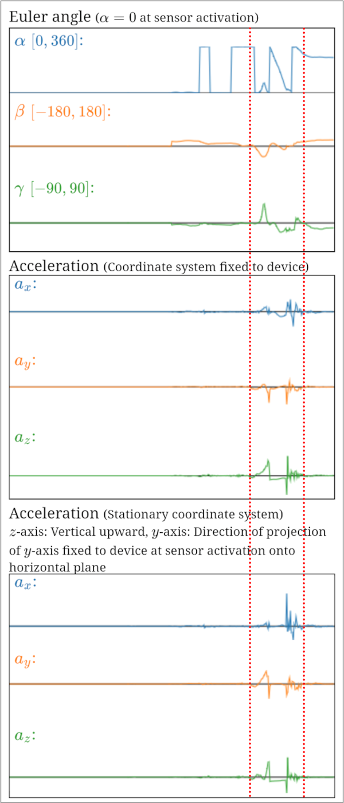
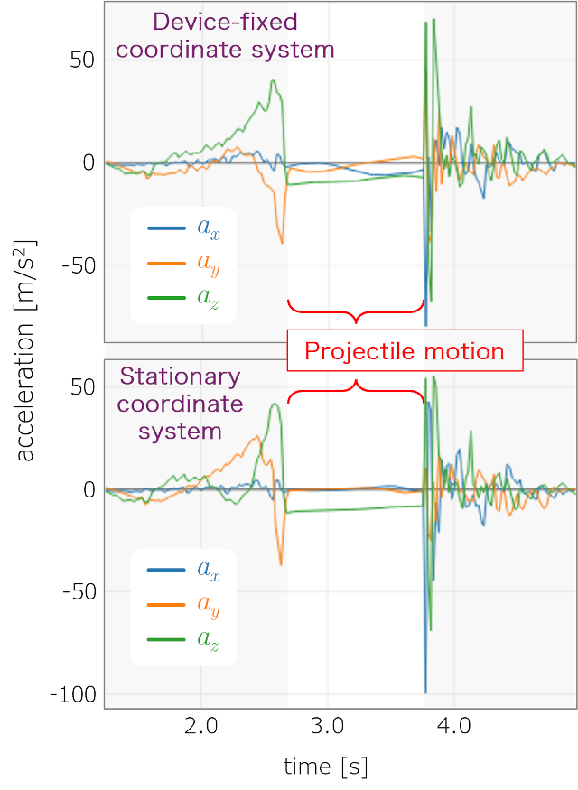
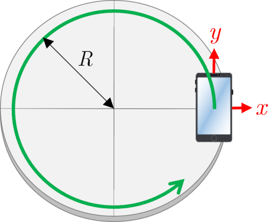
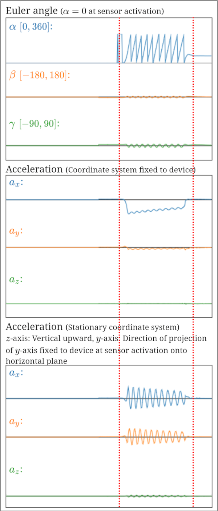
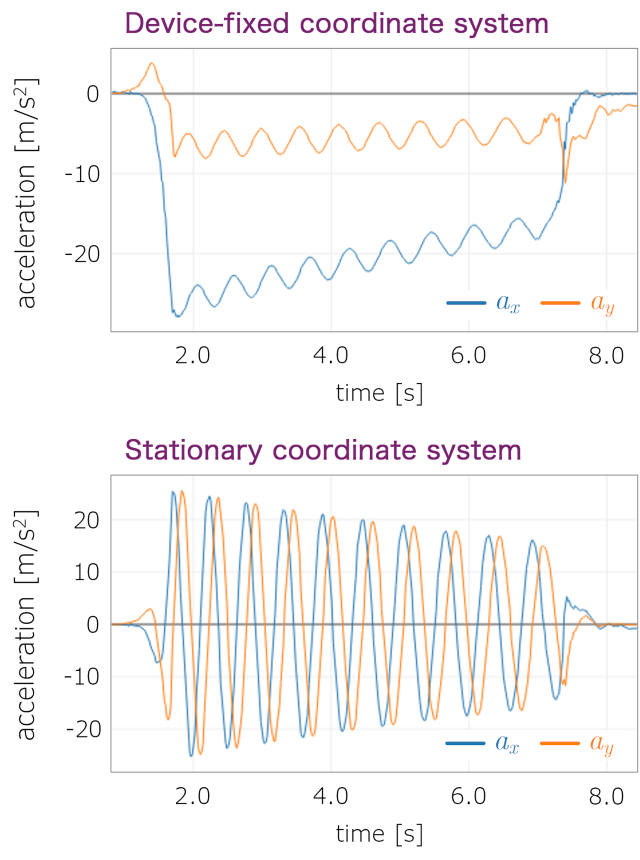

■ Examples of measurement data
- Projectile motion
The following figures show the measurement screen when a smartphone is obliquely projected, and the graph of accelerations in the time region between the red dotted lines in the measurement screen (top: accelerations in the coordinate system fixed to the device, bottom: accelerations in the stationary coordinate system).
Measurement screen

Graph of acceleration

The large accelerations before and after the projectile motion represent the acceleration due to the force of the projectile and the acceleration due to the impact when the device is caught.
Neglecting the effect of air and other factors, an object in projectile motion near the earth's surface experiences a constant gravitational acceleration in a vertical downward direction. As seen from the Euler angle data on the measurement screen, the smartphone is rotating during the projectile motion. Therefore, the acceleration in the device-fixed coordinate system is changing in response to the vertical direction changing from moment to moment in this system. However, in the stationary coordinate system, only the z component (vertical component) of the acceleration has a nearly constant value (approximately -9.8 m/s2), and the x and y components have nearly zero values.
- Circular motion
A smartphone is fixed to a rotating circular table as shown in the figure so that the device-fixed x axis and y axis face the radial and tangential directions, respectively, and is subjected to rotational motion. The following figures show the x and y components (horizontal components) of accelerations (top: acceleration in the coordinate system fixed to the device, bottom: acceleration in the stationary coordinate system) in the time region between the red dotted lines in the measurement screen.
Measurement screen

Graph of acceleration

The x component of the acceleration in the device-fixed coordinate system corresponds to the centripetal acceleration and the y component to the tangential acceleration. The rotation is gradually damped by the friction of the rotating table, resulting in a negative acceleration in the tangential direction. The magnitude of the centripetal acceleration also shows a gradual decrease. The x and y components of acceleration in the stationary coordinate system show sinusoidal curves that are $\pi/2$ out of phase with each other, representing the well-known acceleration in circular motion. However, the acceleration is gradually decreasing due to damping by friction.